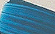

Les blancs synthétiques
English version

|
Le blanc de titane
Contrairement à ce que prétendent encore certains auteurs, il n'est
pas jaunâtre du tout : il est plutôt légèrement bleuté. A vrai dire, il ne
nous a même pas été possible de trouver un blanc de titane à tendance
jaune, ni sous forme de pigment, ni sous forme de peinture en tube. Il
faut préciser qu'il s'agit d'un pigment enrobé
et que le matériau utilisé pour cela lui confère des propriétés
variées. Ce
sujet est développé dans un important passage du chapitre XXII des
Dialogues de Dotapea (lien)
et en différents points du Courrier
des Lecteurs.
Le
traitement du matériau interne, à base de rutile, TiO2,
peut également faire varier, par association à d'autres éléments, la
teinte de ce pigment
(lire l'article Les titanes).
|
Sommaire
Le blanc de titane
Le blanc de zinc
Le blanc de lithopone (glossaire)
Le blanc dit d'argent,
de Saturne, de plomb ou céruse
Le blanc de Jupiter ou
blanc de bismuth
Les blancs de baryum et
de silice
Le blanc d'étain
Le blanc fluorescent
Un cas particulier : le
chlore |

Il y a gros à parier que les premières synthèses du blanc de titane tiraient
sur le jaune, comme certaines sources le mentionnent, et que ce défaut a été
compensé par la suite. Peut-être aussi la mauvaise
préparation de certaines huiles transparaissait-elle davantage en présence
de ce blanc qui est l'un
des plus éblouissants pigments qui soient. A tel point - et ce n'est
pas une boutade - que l'on déconseillera de laisser à l'air libre, pendant
les nuits d'été, une surface fraîche peinte avec ce pigment tant il attire
les insectes nocturnes qui la confondent avec une source de lumière.
La photo
ci-contre permet de comparer le blanc de titane à un
blanc de lithopone, mélange de blanc de zinc et de blanc de baryum
réputé plutôt neutre.
Le titane a
détrôné le blanc de lithopone et les autres blancs pour nombre d'usages
parce qu'il est à la fois
* très lumineux
* permanent
* parfaitement stable en mélange (ce qui
n'est pas forcément le cas du blanc de lithopone, selon la qualité du
lavage du pigment), sauf variétés non enrobées qui
ne devraient pas se trouver sur le marché pigmentaire
* sensiblement dépourvu de toxicité (Lire
Blanc de zinc, blanc de titane : toxicité).

Ses défauts :
* il est un peu grumeleux au liage. A cause
des temps d'imbibition, il doit être de préférence traité en premier sur
la palette lorsque le peintre prépare lui-même la pâte (voir
Séparer ou non liants et pigments). Le
mélange à la spatule doit être effectué un peu plus longuement et
vigoureusement que pour les autres couleurs. Certaines variétés sont un
peu difficiles à lier aux liants aqueux. En dehors de ce détail
technique, il ne pose aucun problème particulier. Il est légèrement plus
absorbant que la moyenne, c'est tout. Lire
passage in Mauvaise absorption.
* il est parfois un peu trop bleu ! Il faut
souvent lui adjoindre une très petite quantité de jaune.
* il est un petit peu coûteux mais son
rapport coût/facteur couvrant est plus intéressant que celui du blanc de
lithopone.
Malgré ces menus
inconvénients, l'apport de ce pigment pour tous les procédés de peinture est
immense. De même, il est conseillé d'en ajouter aux blancs naturels comme le
blanc de Meudon lors de la préparation de
gessos.
Voir
Les titanes (famille de pigments) et surtout
l'article Ciments et peintures
autonettoyantes, nanotechnologies dont le TiO2 est la pierre
angulaire.
Le blanc de zinc
Composition,
extraction, détails : lire l'article du glossaire.
Pendant
longtemps, le blanc de zinc a bénéficié d'une
réputation de froideur et de bonne tenue, contrairement à toutes les autres
couleurs au zinc, qui ont été abandonnées. Il a suscité beaucoup d'intérêt
malgré sa transparence excessive parce que le titane naissant était
considéré comme étant trop chaud (voir ci-dessus),
de même que les blancs naturels,
naturellement grisâtres ou jaunâtres.

Aujourd'hui,
l'intérêt du blanc de zinc pur semble plutôt limité. Certaines variétés
de mauvaise qualité contiendraient du soufre, ce qui peut pose un problème de compatibilité avec
les siccatifs au plomb en peinture à l'huile. De plus, il est assez transparent. Pour cette raison,
son emploi manque cruellement du confort remarquable qu'offre le blanc de
titane. Il peut cependant rendre des services pour l'application de
vélatures et d'autres glacis.
Il trouve une
application utile en utilisation conjointe au blanc de titane. Lire
passage in Les dialogues de
Dotapea, chap. XXII.
Le
blanc de lithopone, comportant une variété
sulfurée du blanc de zinc, n'a plus maintenant que des emplois d'arrière
plan en peinture artistique.
L'oxyde de zinc
et les arts du feu --> lire l'article du glossaire.
Lecture
conseillée :
Le blanc de zinc sur Pourpre.com

Le blanc dit d'argent, de
Saturne, de plomb ou ceruse
C'est un blanc
minéral à base de plomb, poison violent traité dans une
page séparée.
Le blanc de Jupiter ou blanc de
bismuth
A base de
bismuth (métal très lourd, voir tableau des
éléments périodique), c'est un pigment très transparent à utiliser de
préférence en glacis.
Il doit être
broyé d'une manière particulière de sorte à ne pas jaunir. Le procédé est
flamand. Il est mentionné par le Docteur de Mayerne. On fait cuire une part
d'huile de tournesol
crue avec de la litharge, puis on
introduit le pigment à froid.
Les
blancs de baryum et de silice
Ils font partie
des blancs dits "naturels" car ils sont très présents dans les terres
blanches. Cependant, un traitement est nécessaire pour les extraire.
Ils sont traités dans l'article consacré aux
terres blanches.
Le
blanc d'étain
Cet oxyde
d'étain (PW15)
n'est pas un pigment très courant. Il ne brille pas par sa présence dans les
catalogues. En fait, c'est un composé SnO3 (stannate)
que l'on marie avec d'autres composés pour former des
sels. Nous ignorons s'il est aussi utilisé
parfois sous forme pure en peinture mais de toute façon cet emploi serait
plus que marginal.

Sa principale
utilisation se trouve dans la fabrication du
bleu caeruleum (photo ci-contre),
ou du moins de certaines versions ce cette couleur. Dans ce bleu, il "rompt"
la teinte franche du cobalt avec lequel il est associé. C'est lui qui
apporte toute sa subtilité à cette couleur.
Le blanc fluorescent
C'est
typiquement un triazine-toluene sulfonamide-paraformaldehyde polycondensé
résineux (!) ajouté d'autres substances colorantes. Il peut être utilisé pour tous les procédés
de peinture ordinaires, aqueux ou gras. Rien ne dit qu'il n'existera pas
demain d'autres formulations car nous sommes là dans un domaine très
dynamique.
Dans la petite
palette des pigments fluorescents, il joue évidemment un rôle décisif,
notamment dans les mélanges dont il permet de rehausser le ton. Son prix
n'est pas excessif, environ 10€ pour 100 grammes en 2011. Sa tenue serait
assez bonne (non confirmé) car il appartient à la génération assez récente
des couleurs fluorescentes non fugaces qui ont demandé quelques décennies de
recherches. Pour autant - et sous toute réserve -, on le classera plutôt, en
attendant des confirmations, dans les semi-permanents à l'instar de pigments
synthétiques moyens.
Comme il se
doit, il est luminescent en lumière noire (de
Wood) et non uniquement en
lumière visible.
A lire en complément
Fluorescence : enfin des
couleurs rompues ?
in Courrier des lecteurs
Voir aussi
Pigments et phénomènes phospho/fluo
Le
chlore
L'élément sur la table de Mendeleïev
Article du glossaire
Ce n'est pas un
pigment, pourtant cette substance permet sous certaines formes (notamment
l'eau de Javel), de blanchir les tissus et les papiers trop jaunes, mais
aussi "d'ouvrir un blanc" dans une aquarelle - et d'autres peintures à l'eau
- et à ce titre, il mérite d'être mentionné dans cet article.
Claude
Berthollet découvrit les vertus décolorante du chlore en 1791. Ce faisant,
il a bouleversé l'univers chromatique des tissus car il était pratiquement
impossible ou du moins très difficile auparavant d'obtenir un blanc
véritablement pur et permanent (la méthode la plus courante était le
blanchiment "au pré", lourde par sa mise en oeuvre et peu efficace).
L'eau de
Javel est du chlorure ou de l'hypochlorite de sodium ou de potassium -
un sel comprenant ce non-métal
halogène gazeux qu'est le chlore - en solution aqueuse. Son nom provient
de celui d'un village devenu un quartier de Paris, où était implanté le site
de fabrication. Simplement séchée à l'air libre, elle produit un
précipité cristallin discret
que l'on ne remarque pas lors d'un emploi ménager. Ce sel se remet en
solution en présence d'eau.
On nous signale
que l'utilisation du chlore pour le blanchiment ne se ferait pas toujours
dans des conditions normales d'hygiène et de sécurité dans certains pays en
voie de développement ou du tiers-monde (voir
La teinte du papier dit
'blanc" in papiers).
Retour
début de page